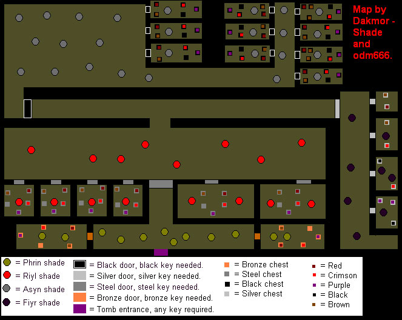
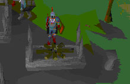

Shades of Mort'ton
Introduction
Mort'ton shades are the shade floating around in Mort'ton and the tomb nearby. They can be killed and burned for various rewards. For information about the Mort'ton shades quest, click here (link to quest help, Mort'ton shades guide). You must have done this quest in order to burn shades and enter the tomb. Also, we recommend you to permanent cure the shopkeeper Razmire (use serum 207 on flaming fire altar with sanctity over 20% and do the "In search of the Myresque" quest, which provides you with an easier route to Mort'ton
Pyre logs:
To burn the different level shades, you need different types of pyre logs. To make pyre logs, buy olive oil in the Mort'ton shop and use it on the flaming fire altar in the temple. You need at least 10% sanctity for this, you can improve your sanctity by building the temple or killing the Loar shades (level 40) that are attacking the temple. This will get you sacred oil. Use the sacred oil on logs to create pyre logs. Different logs require different doses of sacred oil. Adding oil to a log gives you 10 firemaking experience.
Pyre log information:
| Log Type | Level needed to burn | Doses of sacred oil needed to make | Can be used to burn | Can be used to burn levels | Firemaking experience per log |
|---|---|---|---|---|---|
| 5 | 2 | 40 | 60 | ||
| 15 | 2 | 60 | 70 | ||
| 30 | 3 |
|
40, 60, 80 | 100 | |
| 50 | 3 |
|
40, 60, 80 | 175 | |
| 65 | 4 |
|
40, 60, 80, 100 | 255 | |
| 80 | 4 |
|
40, 60, 80, 100, 120 | 404.5 |
Killing shades:
The level 40 shades can be found in the city of Mort'ton , but all others shades are located in the tomb. To enter, you need at least a bronze key, which can be obtained by burning a level 40 shade. Below is a home-made map of the tomb:

Burning shades:
Once you have obtained shade remains, you will have to burn them at a funeral pyre; these are located around the city of Mort'ton . Use your required type of pyre log on the funeral pyre, add your shade remains to that and then left-click to light the funeral pyre.
Doing this will get you firemaking experience, prayer experience and a reward. These will spawn on the little table next to the funeral pyre. This reward will hopefully be a shade key, or you have bad luck and get some coins.

The use of keys:
There are 20 different keys you can get from shades. They vary in base metal and colour coding. The different kinds of metal bases will allow you to open doors of the same kind or lower metals. The colour and metal together shows what chest you can open with the key. The reward you get from a chest mostly depends on the metal. The metals are, from bottom to top: bronze, steel, black and silver. The 5 different colours are from low to high: brown, red, crimson, black and purple.
Chest loot:
Below is listed the loot we know sure of that each chest gives. Please note: all chests can get you:
- Fine cloth, higher metals and colours have a higher chance on a fine cloth.
- Coins, higher metals and colours give more money, the amount is randomly chosen.
- Swamp paste, higher metals and colours give more swamp paste. You can sell it to the general store or keep it for building the temple later.
| Chest | Key | Always | Loot |
|---|---|---|---|
| Bronze |
(Minus loot value, can be zero) (Between 5-10) |
||
| Steel |
(Minus loot value, can be zero) (Between 15-30) |
||
| Black |
(Minus loot value, can be zero) (Between 25-40) |
||
| Silver |
(Minus loot value, can be zero) (Between 25-40) |
||
Fine cloth:
The fine cloth gotten from the chests is what it is all about. You can sell them for 15-20k a piece or use them to make the special splitbark armour. Making this armour is considered expensive, but the armour itself is very useful.
Splitbark armour:
The splitbark armour is the melee protection for mages. To make splitbark, you need to talk to the funny dressed mage in the mage tower south of Draynor. For splitbark armour you need a number of fine cloths, bark and money.
The statistics for splitbark armour are as follows:
| Coins needed to make: | 1,000 | 1,000 | 32,000 | 37,000 | 6,000 |
| Fine cloth & bark needed: | 1 | 1 | 3 | 4 | 2 |
| Attack Bonuses | |||||
| Stab | 0 | 0 | 0 | 0 | 0 |
| Slash | 0 | 0 | 0 | 0 | 0 |
| Crush | 0 | 0 | 0 | 0 | 0 |
| Magic | +2 | +8 | +7 | +1 | +1 |
| Range | -2 | -10 | -6 | -1 | -1 |
| Strength | 0 | 0 | 0 | 0 | 0 |
| Defence Bonuses | |||||
| Stab | +10 | +36 | +22 | +3 | +3 |
| Slash | +9 | +26 | +20 | +2 | +2 |
| Crush | +11 | +42 | +25 | +4 | +4 |
| Magic | +3 | +15 | +10 | +2 | +2 |
| Range | 0 | 0 | 0 | 0 | 0 |
| Prayer | 0 | 0 | 0 | 0 | 0 |
Shade descriptions:
Below is a description of all the different shades and some more information about them.
| Shade | Level | Minimum log needed to burn | Prayer xp for burning | Keys given when burned | Location | Description |
|---|---|---|---|---|---|---|
|
Loar Shade |
40 | 33 |
|
All over the place in Mort'ton | There green shades float around everywhere and are easy as pie. In world 2 you can pick their remains from the ground. No food needed to fight this, unless you are a low level. | |
|
Phrin Shade |
60 | 46.5 |
|
In the small hallway just as you enter the tomb | They float at the start of the tomb around as brown shadows, they are quite aggressive and will transform into a ghostly being when being attacked or when they attack. They can have a good hit, but mostly they're worthless fighters. You might need a bit food to get a full load. | |
|
Riyl Shade |
80 | 59.5 |
|
They are found in the passage behind the steel door | They float around like blood-red shadows, until they attack or are being attacked they become a pretty powerful shade. A bit of food is recommended when fighting these shades. | |
|
Asyn Shade |
100 | 82.5 |
|
They are found floating in a big area in the tombs behind the black door, left at the T-junction. | They float around as little things, but don't underestimate them. They can hit a good 9 and will be very annoying. Good food or some prayer pots is highly recommended. | |
|
Fiyr Shade |
120 | 100 |
|
They can be found behind the silver door in the tomb | The best of the best, these shades give a lot of good stuff as reward. That's why they're supposed to be hard. They can hit a painful 11 and will hit you a lot. Bring a lot of good food or prayer if you are planning to kill these. |
Recommended strategy:
First, you need olive oil to sacrify. Buy all the oil you need at Razmire in Mort'ton on an empty world. Don't forget to make 4 doses at the shop if you make yew or magic pyres. Then bring all the oils to Canifis bank by using the" In search of the Myresque" quest shortcut.
When you have enough oils at the bank, switch to world 2. This is the only world where the temple is still being built. Bring your oil to Mort'ton by using the shortcut and get your sanctity up. You can do this by fighting the Loar shades (fighting xp.), this way you can bring more oils per trip, or by building the temple (crafting xp.); this is faster but you will have less room for oils. When you have enough sanctity, use the olive oil on the flaming fire altar to make sacred oil. After that, return to Canifis bank. When you have sacrified all your oils, use them on your logs to make pyre logs. This also gives firemaking experience.
(The xp. gained depends on the logs used)
Now you are ready to fight the shades. The items you will have to bring are: around 20000 gold coins, tinderbox, a key to each the shades of choice (None for 40, bronze for 60, steel for 80, black for 100 and silver for 120.) your noted pyre logs, good armour and a fine weapon; then you have to decide whether you will hi-alch your reward or sell it to the shop. The first option gives you magic xp, if you chose this bring fire runes (Staff of fire or fire battle-staff recommended) and nature runes, and the second option gives you more space for shades and rewards.
The second choice is how you will protect yourself. The choices are food or melee protection. The first is good for low to medium level shades (lvl 60, 80), whilst prayer is better for higher levels (lvl 100, 120), since they can hit pretty hard.
Option 1; bring noted food
Option 2; bring noted prayer pots.
Now, make you way to Mort'ton general store with all your items. Un-note (sell/buy) the needed protection items and enter the tomb. Inside, find your preferred shade and kill a bunch of them, picking up their remains afterwards. We suggest you get between 10 and 15 shade remains before you leave the tomb. Un-note as many pyre logs as you can carry, then burn the remains on a funeral pyre. Don't forget to pick up the reward! Repeat this until all remains are burned.
*note: make sure you keep 1 key to make sure u can return to your shades.*
For high-alchers: un-note the needed protection at the store and return to the tomb. Open the chests wit your keys and hi-alch your reward. Now you can kill shades for more remains, and this goes on and on and on.
For shop-sellers: enter the tomb and open the chests with your keys. Leave the tomb and sell your rewards to the general store. Un-note your needed protection, enter the tomb and you can kill some more shades. Then it all starts over.
This special report was written by odm666 and Dakmor shade. Thanks to cavedog911, matermine and havoc_cat for corrections.
This special report was entered into the database on Tue, Mar 15, 2005, at 05:47:06 PM by shane12088 and was last updated on Wed, Sep 14, 2005, at 01:20:13 PM by Fireball0236.